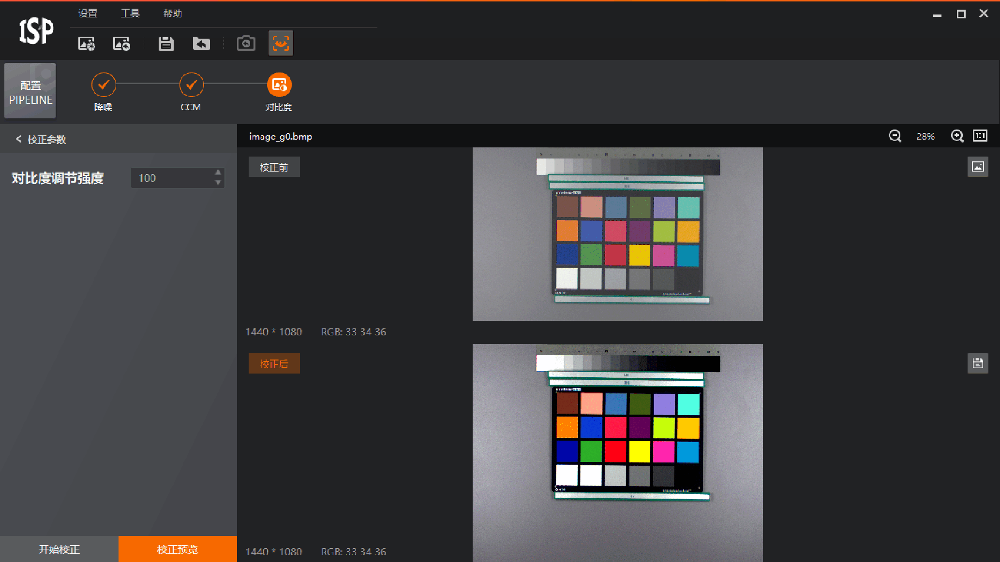
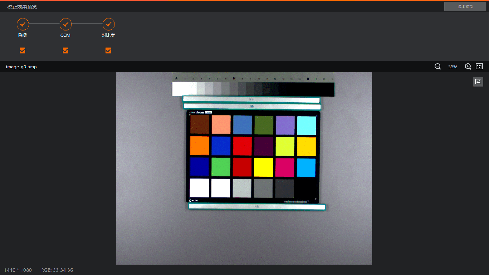
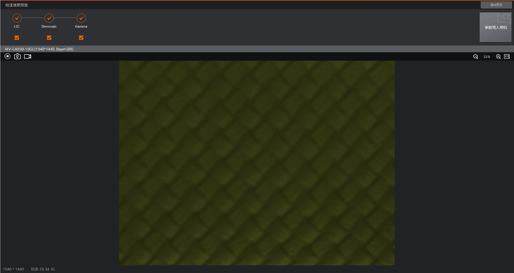

校正效果预览
配置Pipeline中所有算法模块校正完成后，可单击控制工具条中的进入校正效果预览界面，如下图所示。

图 1 进入校正效果预览界面-
在未连接相机状态下，将直接使用当前导入图片进行校正效果预览，如下图所示。也可单击页面中的
 可重新导入图片进行预览。
可重新导入图片进行预览。
图 2 本地图片校正效果预览 -
在连接相机状态下，将直接使用相机当前图像进行校正效果预览，如下图所示。

图 3 相机校正效果预览
说明
-
图像上方默认勾选显示当前Pipeline中所有算法模块的效果，取消勾选可去除该算法效果显示。
-
单击界面右上角参数写入相机，可将当前Pipeline配置参数写入连接相机内部。
-
单击界面右上角退出预览，可退出校正效果预览界面。
-
可通过图像上方的控制按钮实现预览相关操作，具体介绍可查看开启预览章节。